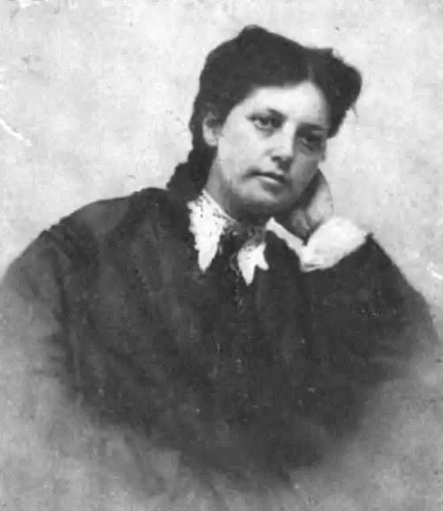

ДОДЖ, Мері Мейпс (Dodge, Mary Mapes — 06.01.1831, Нью-Йорк — 21.08.1905, Онтеор) — американська письменниця. Була другою дочкою в сім'ї Джеймса та Софії Мейпс. Дата її народження досі вважається сумнівною. Батько майбутньої письменниці був учасником війни за незалежність, певний час викладав хімію у нью-йоркській Національній академії, займався книговиданням.
Діти здобули освіту під керівництвом домашніх учителів. Серед предметів, що вивчалися, — латина, французька мова; всі діти займалися музикою і малюванням. Додж з дитинства писала вірші для домашніх урочин. У 1847 р. сім'я Мейпс переїхала у Веверлі. 13 вересня 1851 р. Додж вийшла заміж за адвоката Вільяма Доджа. В 1852 р. у них народився син, а в 1853 — другий.
Додж була звичайною, добропорядною, непримітною жінкою, матір'ю, і ніщо не провіщало письменницької кар'єри. Але в 1858 р. трапилося нещастя — помер Вільям Додж. У 1861 р. батько Додж купив "Американський журнал", де вона розпочала працювати редактором. У цей час Додж багато писала для "Американського журналу" та інших видань (статті, оповідання, рецензії). У 1863 р. Додж опублікувала свої оповідання, а наступного року вийшли друком "Ірвінґтонські оповідання" ("Irvingtori Stories") — збірка дидактичних оповідань, яка підготувала успіх її майбутніх творів. У Додж було одне справжнє захоплення — Голландія. Історія і географія, література, живопис і звичаї жителів цієї країни — все це письменниця ретельно вивчала. Вона прагла спілкуватися з голландцями, з тими людьми, які там побували, з тими, хто щось знав про цю країну. Додж збирала дивовижний за розмаїттям матеріал — про флору та фауну, про архітектуру голландців тощо. Поступово цей матеріал перетворювався у захопливу історію, яку вона читала перед сном своїм синам. Так створювалася знаменита книжка Додж — "Хане Брінкер, або Срібні ковзани" ("Hans Brinker, or The Silver Skates"). Книжка вийшла друком у грудні 1865 p. з ілюстраціями Ф.О. Дарлі та Т. Уеста. Протягом наступних п'ятнадцяти років ця книга отримала більше відгуків, аніж будь-яка інша американська книга для дітей. Відгуки були захопленими: критикам подобалася цікавим сюжетом, легкістю мови, професійністю стилю. Вони відзначали повчальність авторської інтонації і водночас відсутність надокучливого моралізування. У стислий термін книга стала бестселером. Хоча Додж запевняла, що майже всі події, змальовані у книзі, відбувалися насправді, зрозуміло, що сюжет вигаданий і близький до казкового. Але при читанні книги події сприймаються як реальні. Гумор поєднується із серйозністю, сентиментальність зі щирістю. Жвавість мови та оригінальність сюжету роблять книгу популярною для дітей до сьогодні. Додж хотіла, щоб її книга розвивала розумові здібності дитини, спонукала її до пізнання, будила б її почуття. Хоча одна з головних подій книги — втрата Раффом Брінкером пам'яті — підштовхує письменника до психологічного дослідження, Додж відмовляється від цього і пише роман виховання. Додж сама неодноразово зазначала, що найбільше прагнула справедливості: правдивого змалювання життя, побуту голландців, їхніх звичаїв, особливостей їхньої поведінки. Скрупульозний опис життя голландської сім'ї своєю конкретністю створює відчуття реальності. Живі деталі, подробиці дають нам можливість відчути атмосферу життя сім'ї. Читач уважно слідкує за перипетіями в сім'ї Брінкер, переживає і співчуває вигаданим персонажам як живим людям. Щаслива розв'язка, коли зло переможене і сім'я стає щасливою, традиційна для дитячої книги. Незабаром після виходу книги друком до Додж прийшло нове горе — у січні 1886 р. помер її батько. Вона перебрала на себе частину його видавничої діяльності.У сім'ї Додж захоплювалися салонними іграми. Припускають, що сама письменниця приділяла цьому досить багато уваги і навіть винайшла дві гри. Описуючи одну з нових ігор, вона зауважила, що її вигадав 10-річний хлопчик (мабуть, її син). Додж присвятила іграм "Книгу про друзів і про те, у що вони гралися" ("A Few Friends and How They Amused Themselves") — твір про розважальні та інтелектуальні ігри. Додж успадкувала від батька потяг до різносторонньої діяльності — літератури, мистецтва, фізики, хімії, біології, книговидання. У 1872 р. Д. запропонували очолити журнал для дітей, але вона змушена була відмовитися через те, що писала нову книгу. Проте в березні 1873 p., завершивши роботу над книжкою "Дім і родинне вогнище" ("Hearth and Home"), вона згодилася і заснувала дитячий журнал, який назвала "St. Nicolas" ("Святий Ніколас"). Додж обрала для назви ім'я святого, покровителя Амстердама. За словами Додж, цей журнал повинен: подавати дітям приклад, змальовуючи позитивних героїв; прищеплювати любов до рідної країни, до сім'ї, до природи, правди, краси та щирості. Дитячий журнал повинен розвивати уяву, готувати дітей до реального життя. Окрім того, журнал повинен містити корисну інформацію, ознайомлюючи дітей з основами наук. "Святий Ніколас" опублікував вірші Г. Лонгфелло та А. Теннісона. З 1885 р. журнал розпочав публікацію знаменитої повісті Барнетт "Маленький Лорд Фонтлерой" ("Little Lord Fauntleroy"), яка здобула надзвичайну популярність у маленьких читачів. На сторінках "Святого Ніколаса" з'являються повісті та оповідання Р. Кіплінґа "Ріккі-Тіккі-Таві", "Мауглі". З листопада 1893 р. журнал публікував "Пригоди Тома Сойєра" Марка Твена.Але головним у житті Додж залишався її інтерес до Голландії, і в 1894 р. вона видала дві книжки — збірку невеликих оповідань про Голландію "Країна мужності" ("The Land of Pluck"), "Розповідь про колишні часи. Вірші для хлопчиків і дівчаток" ("When Life is Young. A Collection of Verse for Boys and Girls"). До цієї збірки увійшов відомий вірш "Менует" ("The Minuet"), в якому йдеться про те, як бабуся Мейпс танцювала з маркізом де Лафайєтом. На початку 1900-х років Додж почала серйозно хворіти. Далися взнаки роки виснажливої праці, самотність і слабке здоров'я. Незадовго до смерті вона переїхала до рідних в Онтеор, де й померла 21 серпня 1905 р. Після смерті письменниці її книги видавалися багато разів не лише в Америці, айв усьому світі. Найпопулярнішою стала книга "Хане Брінкер, або Срібні ковзани". Н. Волкова _b c оціально-побутових романів, багато з яких мають підзаголовок "Паризькі звичаї": "Фромон молодший і Ріслер старший" ("Fromont jeune et Pisler aine, mo eurs parisiennes", 1874), "Джек" ("Jack, mo eurs parisiennes", 1876) "Набоб" ("Nabob", 1878), "Королі у вигнанні" ("Les Roumestan, mo eurs parisiennes", 1881), "Євангелістка" ("L' Evanqeliste, romanparisien", 1883), "Сафо" ("Sapho, moeurs parisiennes", 1888), "Опора сім Ч" ("Soutien de famille", 1897). Писав Доде і повісті: "Роза та Нінетта" ("Rose et Ninette, moeurs dujour", 1892), "Маленька парафія" ("La Petite Paroisse", 1895). Є. Митропольська